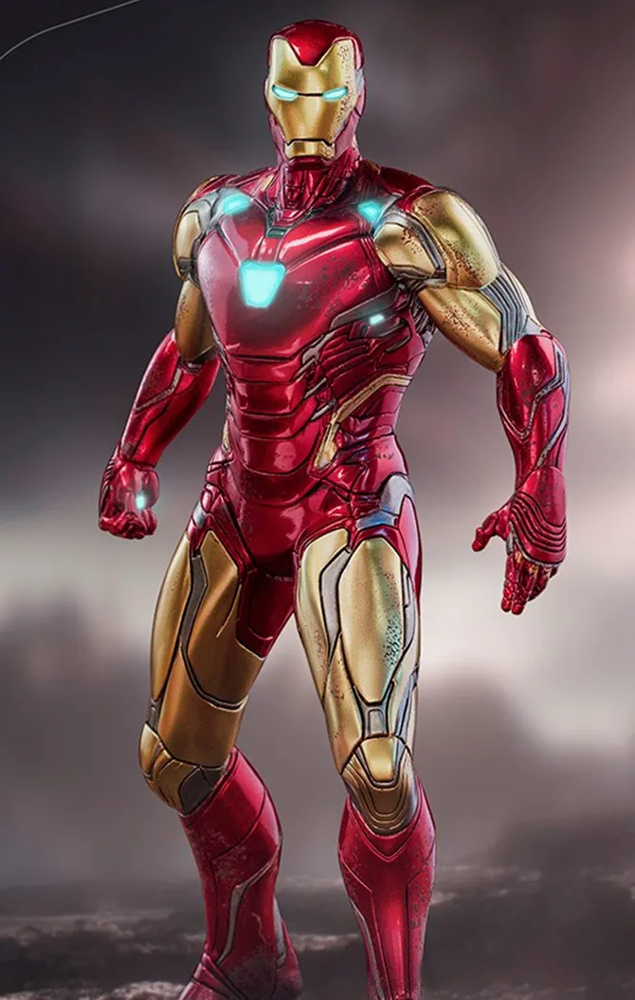

My Favorite Characters
| Character | Info | What this character can do |
|---|---|---|
 Minecraft Steve |
Steve is a playable character from the video game Minecraft. Created by video game developer Markus "Notch" Persson and introduced in the 2009 Java-based version of minecraft, Steve is the first of nine default player character skins available for players of contemporary versions of Minecraft |
It's the player who gets to decide what steve can do in Minecraft
|
Ironman |
Iron Man is one of the persona of Anthony Edward "Tony" Stark, a businessman and engineer who runs Stark Industries a weapons manufacturing company. Stark after testing a Jericho missle in Afghanistan was captured in a war zone and sustained a severe heart wound, together with Ho Yinsen built an armored suit and escaped his captors. Iron Man's suits of armor gives him the ability of superhuman strength, flight, energy projection, and other abilities | Genius Billionare Play Boy Philanthropist
Can easily build armored suits with ease |
 Spiderman |
Spider-Man has the secret identity named Peter Parker. Initially, Peter was depicted as your average teenage high-school student and an orphan raised by his Aunt May and Uncle Ben after his parents died in a plane crash. Peter gets bitten by a radioactive spider during a museum tour which gave him powers. He initially used his powers for his own personal gain, but after Uncle Ben was killed by a thief that Peter could not stop, he began to use his powers to fight crime by becoming Spider-Man. | superhuman strength, agility, reflexes, stamina, durability, clinging to walls and ceilings like a spider, and detecting danger with his precognition ability called "spider-sense"
He built a wrist-mounted "web-shooter" devices that shoot artificial spider-webs of his own design, which he uses both for fighting and travel, or "web swinging" across the city |
 Lightning Mcqueen |
Lightning Mcqueen during Cars 1 is a talented but cocky rookie in the Piston Cup racing series who becomes stranded in the small town of Radiator Springs. During his stay, he learns about humility and friendship from the locals. Over his racing career he wins several Piston Cup victories. In Cars 2, he competes in the World Grand Prix but the race gets interrupted. In Cars 3, he struggles to come to terms about retirement. After coming to terms with retirement, he assumes the role of Cruz Ramirez's mentor, continuing the hudson hornet legacy | Very fast even though in retirement
Respected as a legendary racer |
 Dart Monkey |
The Dart Monkey is a small brown monkey with a single dart in its hand. He is capable of popping one bloon unless it is upgraded. The darts are ineffective against Lead Bloons without upgrades or premiums. They also usually become outclassed by many other towers as you progress throughout the game, although at their highest level they can fulfill specific defensive niches. | He can pop 1 red bloon
dart monke |